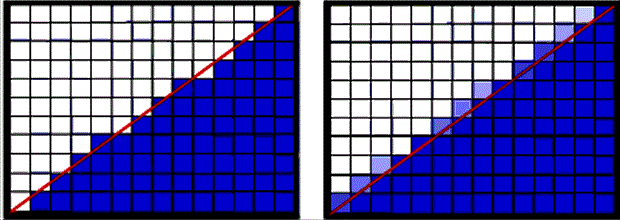
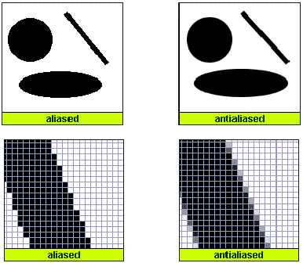
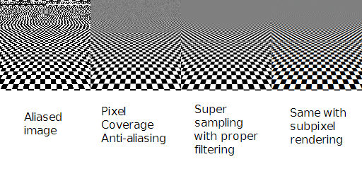

Aliasing is the phenomenon that occurs when high frequency signals are sampled at a lower rate creating a visual distortion in the image. Typically the image will tend to have jagged edges as opposed to smoother ones. This is due to the discrete nature of the image raster which has a finite frequency range thus creating a bound on the set of represented signals from those that are continuous from the entity being sampled. This effect is much more noticeable in animations than in still images.
 Antialiasing techniques tend to fall under one of two categories: supersampling and "filtering".
The practice of supersampling uses the idea of a filter, the basic idea is that an image is sampled at an exponentially high output resolution and translated through low-pass filters, used to keep the signals within the signal bound. Though supersampling is a common practice, it only produces images with noise less irritating than the original aliased image; this is because the filter is applied after the image has been sampled.
The other technique, which is generically dubbed "filtering", applied this filter prior to the sample and takes the signal from the continuous space. Though this approach tends to be more costly, the results are often much more favorable as the technique works in the subpixel dimension via exact area sampling.
In many cases, the latter technique has proven to be superior. One approach explored in texturing terrain uses a model of ray casting hit points on a voxelized terrain model, where 1-dimensional values can be interpreted as 3D information.
To be expanded...